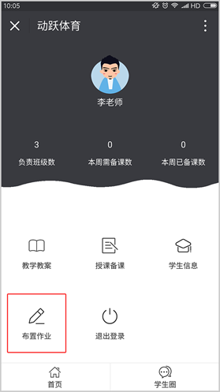
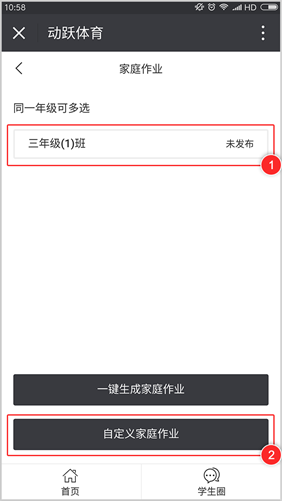
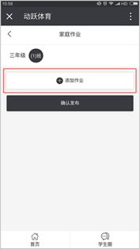
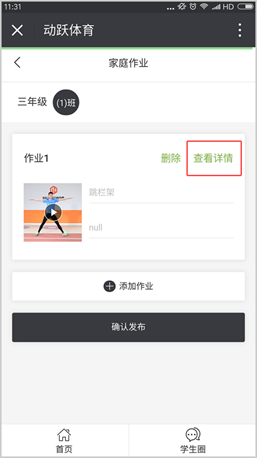
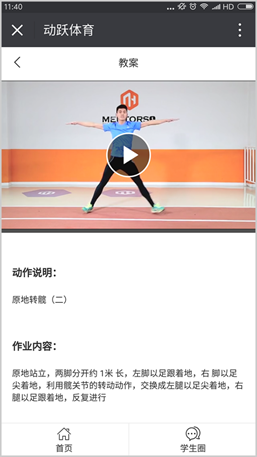
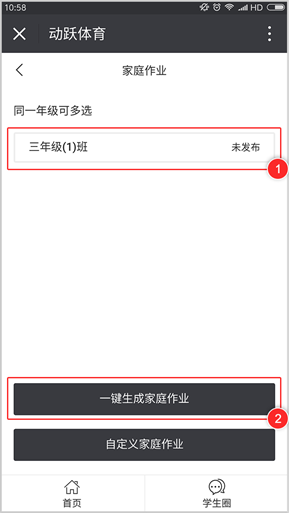
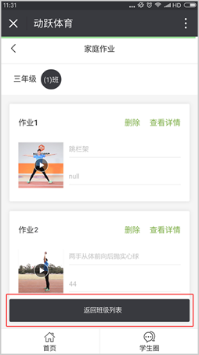
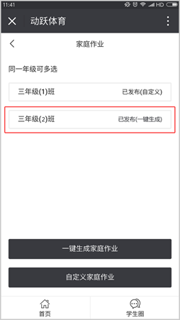

教师手机微信端布置家庭作业方法：
视频教程：
1. 在教师端页面，点击【布置作业】，进入授课备课页面。

2. 页面展示教师所教授的班级列表，选择需要布置家庭作业的班级，布置家庭作业的方法有两种，一键生成家庭作业或自定义生成家庭作业，首先点击自定义家庭作业。

3. 进入页面后，轻触【添加作业】，按照教师授课所需选择【动作视频】，选择视频分类。



4. 点击完成后，即自定义家庭作业成功，轻触【查看详情】，可查看家庭作业详细内容。


5. 页面展示教师所教授的班级列表，选择需要布置家庭作业的班级，点击一键生成家庭作业。

6. 点击确定后，页面显示一键生成的家庭作业内容，点击【返回班级列表】，课查看家庭作业发布成功与否。

